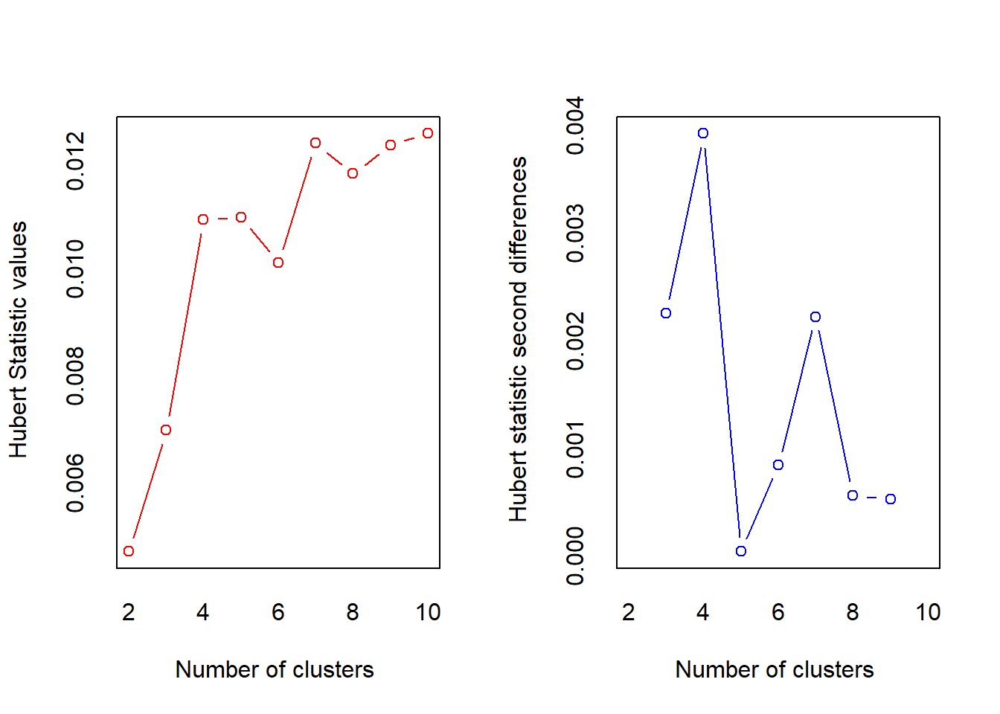
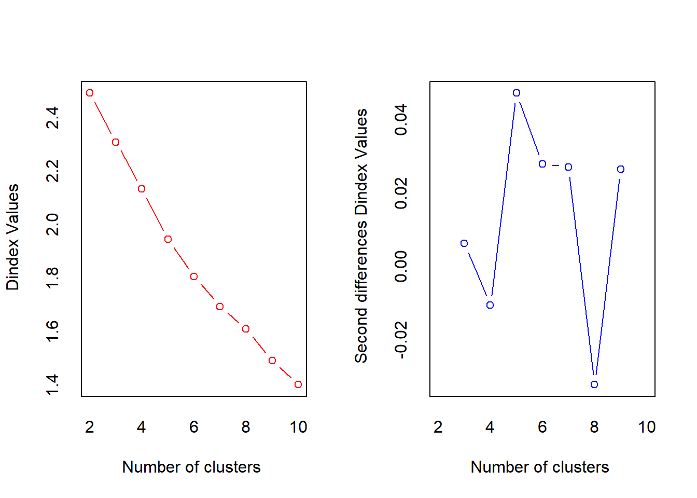
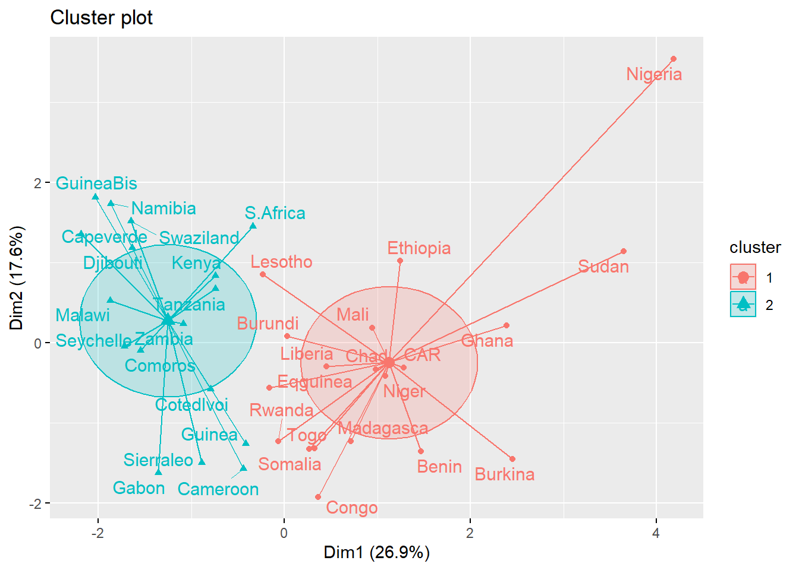

6 Golpes militares y política en África subsahariana
Descripción
Los datos son un subconjunto de un estudio más amplio sobre los factores que afectan la estabilidad del régimen en África subsahariana.
| miltcoup | oligarchy | pollib | parties | pctvote | popn | size | numelec | numregim | |
|---|---|---|---|---|---|---|---|---|---|
| Benin | 1.94 | 0.30 | -1.08 | 1.43 | 0.76 | -0.34 | -0.67 | 0.35 | 0.26 |
| Burkina | 2.51 | 1.29 | 0.61 | 3.81 | -0.81 | -0.14 | -0.38 | -0.47 | 0.26 |
| Burundi | 0.24 | 1.29 | 0.61 | -0.60 | 0.13 | -0.31 | -0.82 | -1.02 | 0.26 |
| Cameroon | -0.90 | -0.87 | 0.61 | 1.43 | -0.10 | 0.00 | -0.02 | 1.99 | 0.26 |
| Capeverde | -0.33 | -0.87 | 0.61 | -1.02 | -0.09 | -0.55 | -0.86 | -1.29 | -1.81 |
| CAR | 0.80 | 1.46 | 0.61 | -0.26 | -0.89 | -0.42 | 0.25 | -0.20 | 1.29 |
Marco de datos con 47 observaciones en las siguientes 9 variables.
golpemilitar: número de golpes militares exitosos desde la independencia hasta 1989
oligarquía: número de años que el país fue gobernado por una oligarquía militar desde la independencia hasta 1989
pollib: Liberalización política: 0 = sin derechos civiles para la expresión política, 1 = derechos civiles limitados para la expresión pero derecho a formar partidos políticos, 2 = derechos civiles completos
partidos: Número de partidos políticos legales en 1993
pctvoto: Porcentaje de votantes en la última elección
población: Población en millones en 1989
tamaño: Área en 1000 kilómetros cuadrados
numelec: Número total de elecciones legislativas y presidenciales
numregim: Número de tipos de régimen
6.0.1 Clúster análisis.
# Calcular 30 estimadores para determinar el numero de cluster
NbClust(datos, distance = "euclid", min.nc = 2, max.nc = 10, method = "kmeans",
index = "alllong")
*** : The Hubert index is a graphical method of determining the number of clusters.
In the plot of Hubert index, we seek a significant knee that corresponds to a
significant increase of the value of the measure i.e the significant peak in Hubert
index second differences plot.

*** : The D index is a graphical method of determining the number of clusters.
In the plot of D index, we seek a significant knee (the significant peak in Dindex
second differences plot) that corresponds to a significant increase of the value of
the measure.
*******************************************************************
* Among all indices:
* 5 proposed 2 as the best number of clusters
* 1 proposed 3 as the best number of clusters
* 6 proposed 4 as the best number of clusters
* 2 proposed 6 as the best number of clusters
* 6 proposed 7 as the best number of clusters
* 7 proposed 10 as the best number of clusters
***** Conclusion *****
* According to the majority rule, the best number of clusters is 10
******************************************************************* $All.index
KL CH Hartigan CCC Scott Marriot TrCovW TraceW
2 1.0226 8.2248 5.7154 -1.3037 71.9668 2.540429e+12 1063.8532 253.6422
3 0.5780 7.4361 6.8262 -1.7463 115.7929 1.691930e+12 863.0881 217.1408
4 1.2550 8.0080 5.5831 -1.0071 185.7638 4.306753e+11 559.5900 179.9230
5 1.5933 8.1856 3.8556 -0.5416 239.1717 1.526409e+11 469.8836 153.1946
6 0.6039 7.8717 5.7674 -0.7010 292.2891 5.026203e+10 366.0237 136.2487
7 3.3928 8.4893 2.2755 0.4621 333.6207 2.170300e+10 237.9755 114.2791
8 0.4539 7.8908 4.0575 -0.1979 366.5925 1.134334e+10 205.0763 105.9646
9 2.0791 8.1117 2.2629 0.3450 410.5029 4.239574e+09 159.5510 92.5528
10 0.2942 7.7674 7.1791 -0.0517 445.1726 1.997977e+09 151.2263 85.3957
Friedman Rubin Cindex DB Silhouette Duda Pseudot2 Beale Ratkowsky
2 6.0889 1.2419 0.4099 1.9955 0.1699 1.4682 -7.9724 -1.7953 0.2452
3 9.0998 1.4507 0.3594 1.7759 0.1530 1.3867 -2.7884 -1.5070 0.3086
4 16.4747 1.7507 0.4105 1.5835 0.1805 1.2613 -3.1072 -1.1057 0.3193
5 22.4730 2.0562 0.3775 1.4290 0.2024 1.0911 -0.6680 -0.4298 0.3165
6 33.7285 2.3119 0.4201 1.2147 0.2153 1.4264 -3.2884 -1.3464 0.3040
7 38.4737 2.7564 0.3112 1.1217 0.2194 3.4117 -4.2414 -2.8299 0.3001
8 42.5675 2.9727 0.3517 1.1129 0.2199 2.2648 -3.3508 -2.5152 0.2857
9 46.2862 3.4035 0.3165 1.0814 0.2370 1.1661 -0.1424 -0.4277 0.2792
10 53.4885 3.6887 0.3070 1.0095 0.2498 3.0079 -2.6702 -3.0064 0.2692
Ball Ptbiserial Gap Frey McClain Gamma Gplus Tau Dunn
2 126.8211 0.2743 -0.8843 -0.0096 0.8750 0.3500 51.1524 55.0937 0.2280
3 72.3803 0.3803 -1.3323 -0.0477 1.4954 0.4998 35.1000 70.1317 0.2080
4 44.9807 0.4430 -1.9810 0.3730 1.7756 0.6012 25.4651 76.7778 0.2698
5 30.6389 0.4378 -2.1769 -5.8435 2.4525 0.6542 18.3381 69.3952 0.2698
6 22.7081 0.3971 -2.1604 0.0036 2.9778 0.6134 18.4143 58.4429 0.1615
7 16.3256 0.4563 -2.3881 -4.0686 3.4733 0.8071 7.5762 63.4127 0.1480
8 13.2456 0.4116 -2.3862 0.1527 4.2674 0.7589 8.2381 51.8667 0.1633
9 10.2836 0.4068 -2.8517 0.0340 5.0998 0.8113 5.3508 45.9984 0.1633
10 8.5396 0.4106 -2.9933 -0.0328 5.1869 0.8260 4.7937 45.5063 0.1633
Hubert SDindex Dindex SDbw
2 0.0047 1.6276 2.4903 0.9050
3 0.0070 1.5116 2.3079 0.8849
4 0.0109 1.6912 2.1316 0.9405
5 0.0110 1.5701 1.9448 0.8106
6 0.0101 1.1862 1.8052 0.4839
7 0.0123 1.3068 1.6935 0.6706
8 0.0118 1.3174 1.6089 0.4584
9 0.0123 1.3107 1.4920 0.4264
10 0.0125 1.2932 1.4016 0.3565
$All.CriticalValues
CritValue_Duda CritValue_PseudoT2 Fvalue_Beale CritValue_Gap
2 0.5803 18.0838 1 0.4736
3 0.4954 10.1857 1 0.6844
4 0.4742 16.6306 1 0.2408
5 0.4205 11.0243 1 0.0307
6 0.2857 27.4964 1 0.2905
7 0.2098 22.6009 1 0.0614
8 0.2857 14.9980 1 0.5405
9 0.0985 9.1544 1 0.2379
10 0.2857 9.9987 1 -0.1167
$Best.nc
KL CH Hartigan CCC Scott Marriot TrCovW
Number_clusters 7.0000 7.0000 10.0000 7.0000 4.0000 4 4.000
Value_Index 3.3928 8.4893 4.9162 0.4621 69.9709 983220443771 303.498
TraceW Friedman Rubin Cindex DB Silhouette Duda
Number_clusters 7.0000 6.0000 7.0000 10.000 10.0000 10.0000 2.0000
Value_Index 13.6551 11.2555 -0.2282 0.307 1.0095 0.2498 1.4682
PseudoT2 Beale Ratkowsky Ball PtBiserial Gap Frey
Number_clusters 2.0000 2.0000 4.0000 3.0000 7.0000 2.0000 1
Value_Index -7.9724 -1.7953 0.3193 54.4408 0.4563 -0.8843 NA
McClain Gamma Gplus Tau Dunn Hubert SDindex Dindex
Number_clusters 2.000 10.000 10.0000 4.0000 4.0000 0 6.0000 0
Value_Index 0.875 0.826 4.7937 76.7778 0.2698 0 1.1862 0
SDbw
Number_clusters 10.0000
Value_Index 0.3565
$Best.partition
Benin Burkina Burundi Cameroon Capeverde CAR Chad Comoros
2 2 10 1 5 10 7 6
Congo CotedIvoi Djibouti Eqguinea Ethiopia Gabon Ghana Guinea
10 1 5 10 7 6 2 6
GuineaBis Kenya Lesotho Liberia Madagasca Malawi Mali Namibia
5 3 9 8 8 5 7 5
Niger Nigeria Rwanda Seychelle Sierraleo Somalia S.Africa Sudan
7 4 8 6 6 7 3 8
Swaziland Tanzania Togo Zambia
5 3 10 3 #cluster por el metodo kmeans
kmeans_model <- kmeans(datos, centers = 2, nstart = 25);kmeans_model # Número de grupos a encontrarK-means clustering with 2 clusters of sizes 19, 17
Cluster means:
miltcoup oligarchy pollib parties pctvote popn size
1 0.5349621 0.7155842 -0.3673784 0.1938236 -0.02778553 0.1533209 0.2205704
2 -0.5978988 -0.7997706 0.4105993 -0.2166264 0.03105442 -0.1713587 -0.2465199
numelec numregim
1 0.003992902 0.6937212
2 -0.004462655 -0.7753354
Clustering vector:
Benin Burkina Burundi Cameroon Capeverde CAR Chad Comoros
1 1 1 2 2 1 1 2
Congo CotedIvoi Djibouti Eqguinea Ethiopia Gabon Ghana Guinea
1 2 2 1 1 2 1 2
GuineaBis Kenya Lesotho Liberia Madagasca Malawi Mali Namibia
2 2 1 1 1 2 1 2
Niger Nigeria Rwanda Seychelle Sierraleo Somalia S.Africa Sudan
1 1 1 2 2 1 2 1
Swaziland Tanzania Togo Zambia
2 2 1 2
Within cluster sum of squares by cluster:
[1] 167.92248 85.71969
(between_SS / total_SS = 19.5 %)
Available components:
[1] "cluster" "centers" "totss" "withinss" "tot.withinss"
[6] "betweenss" "size" "iter" "ifault" # visualización de clusters
fviz_cluster(kmeans_model, data = datos, ellipse.type = "euclid", repel = TRUE, star.plot = TRUE)
De acuerdo al cálculo del número optimo de cluster que mejor describen el comportamiento de los datos basado en el criterio de 30 estimadores y de acuerdo a nuestras consideraciones el número de cluster seleccionados fueron 2 para el análisis de los datos.